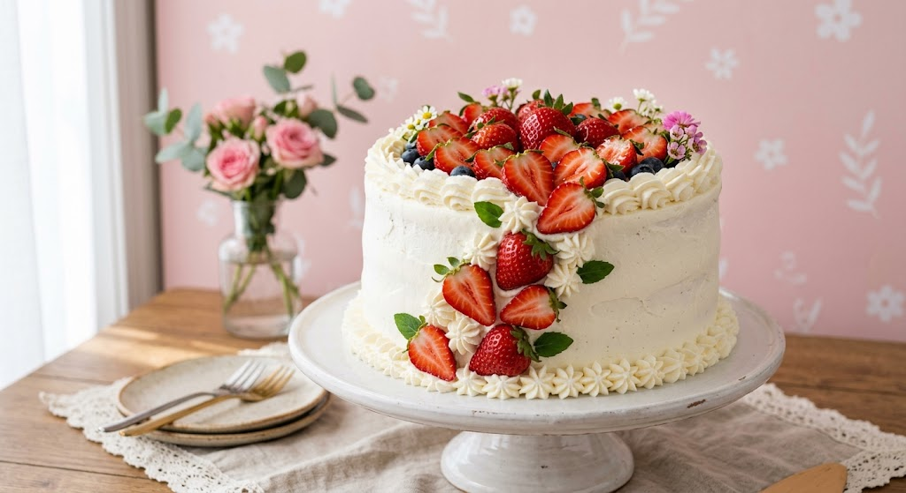
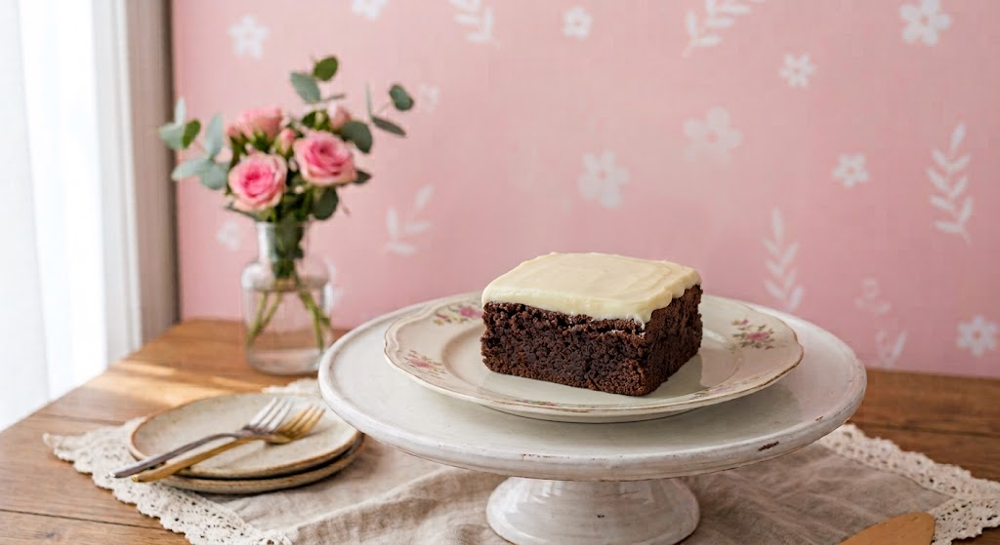
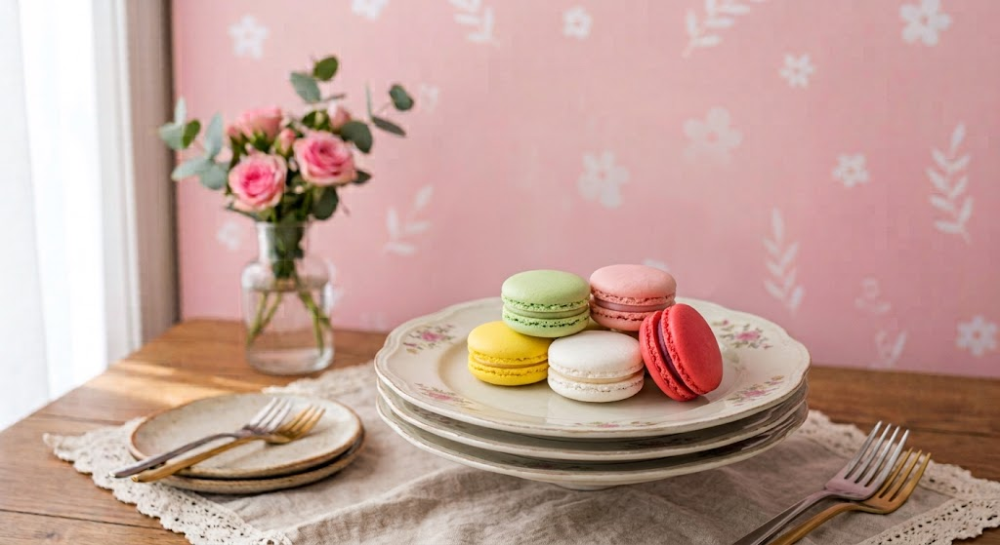
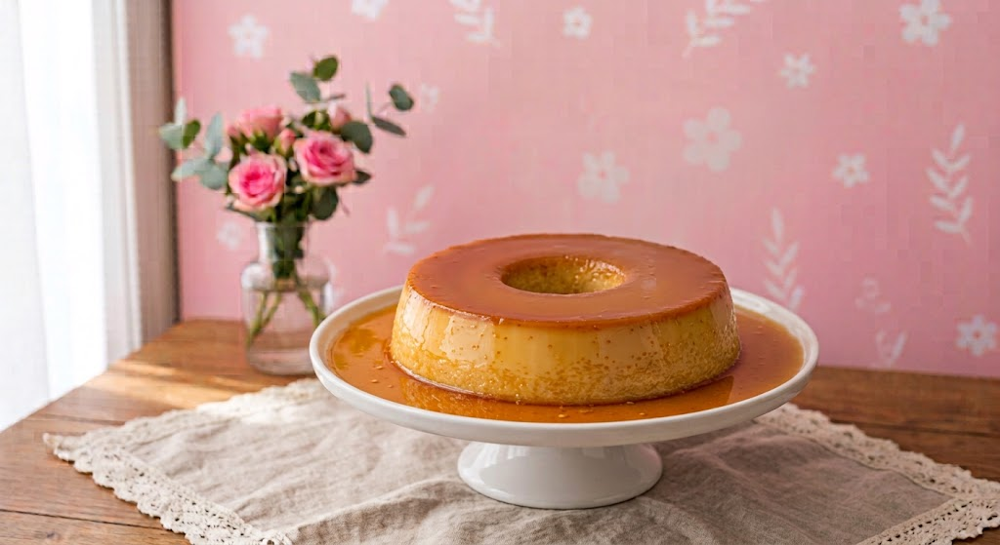

Bem-vindo à Doce Encanto!
Na Doce Encanto, transformamos ingredientes especiais em doces preparados com carinho para tornar cada momento ainda mais saboroso.

Nossos doces são preparados artesanalmente.
Nossos favoritos ✨

Brownie artesanal com cobertura de ninho e textura macia.

Macarons artesanais com recheios deliciosos.

Pudim de leite condensado cremoso e saboroso.
Momentos Especiais ✨
Nossos doces são preparados para acompanhar os momentos mais especiais da sua vida.
- 🎂 Aniversários
- 💍 Casamentos
- 🎓 Formaturas
- 🎉 Eventos Especiais
- 💝 Presentes personalizados
Um pouco do nosso processo 💕
Cada receita da Doce Encanto é preparada com carinho, atenção aos detalhes e ingredientes selecionados.